数据结构-第四章：树与二叉树
树的定义
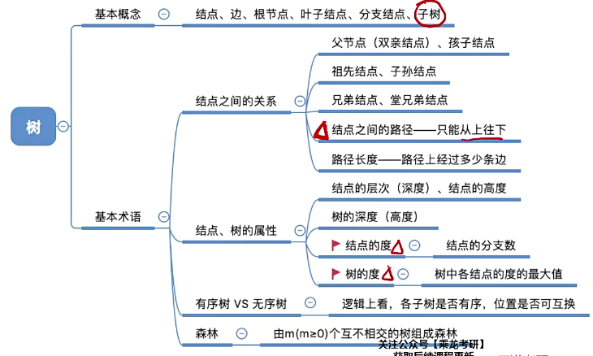
树的基本概念
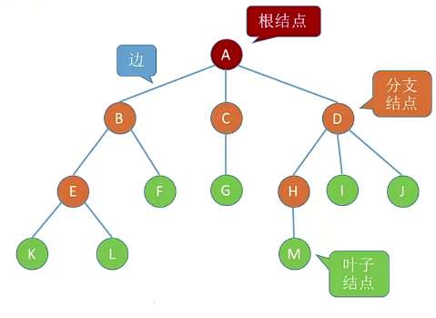
- 空树：结点为空集的树
- 非空树
- 有且仅有一个根节点
- 没有后继的结点称为叶子结点
- 有后继的结点称为分支结点
- 除根结点任何一个结点有且仅有一个前驱
- 子树：树中的一部分可构成树的部分，如：
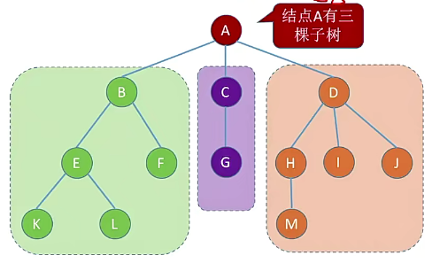
可以看出，树是一种递归递归定义的数据结构：任何树都可以用子树表示。
结点之间的关系：
- 祖先结点
- 子孙结点
- 父结点
- 孩子结点
- 兄弟结点
- 堂兄弟结点
以上不做解释，可以直接“望文生义”
- 路径：从上往下经过的边（树中的边是有向的）
- 路径长度：经过几条边
结点与树的属性
- 结点的层次（深度）：从上往下数，默认根结点为第1层
- 结点的高度：从下往上数
- 树的高度（深度）：总共几层
- 结点的度：有几个分支
- 树的度：各结点度的最大值
有序树与无序树
- 有序树：逻辑上看树种结点的各子树从左至右是有次序的，不能互换
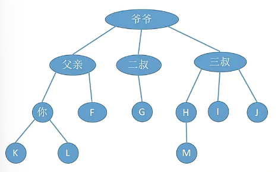
- 无序树：逻辑上看树种结点的各子树从左至右是无次序的，可以互换
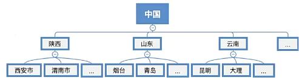
具体取决于所存数据，是否需要通过结点左右位置反应逻辑关系。
森林
m课互不相交的树的集合。
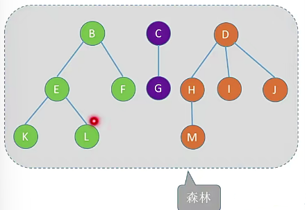
树的性质
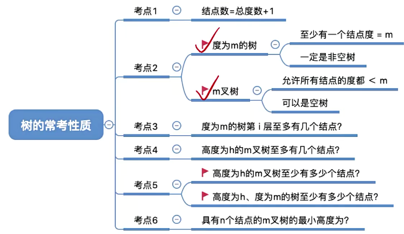
- 结点数=总度数+1
- 度为m的树、m叉树的区别
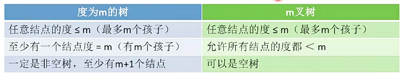
度为m的树第i层至多有$m^{i-1}$个结点
- 第一层:$m^0$
- 第二层:$m^1$
- 第三层:$m^2$
- …
高度为h的m叉树最多有$\frac{m^k-1}{m-1}$个结点
- 等比数列求和
- 高度为h的m叉树至少有h个结点；高度为h度为m的树至少有h+m-1个结点
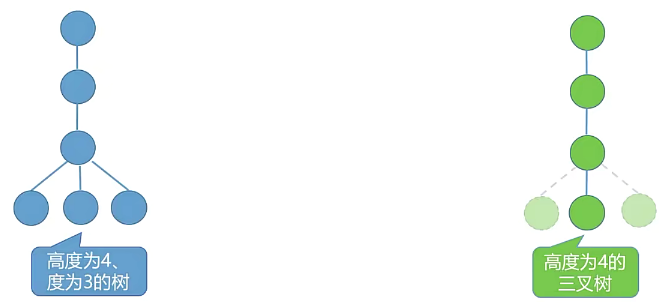
- 具有n个结点的m叉树的最小高度为[log_m(n(m-1)+1)]
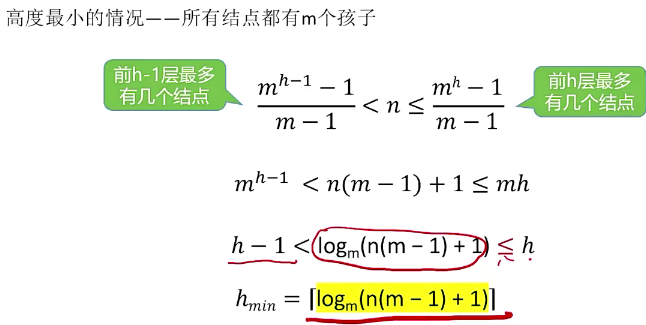
二叉树
定义与基本术语
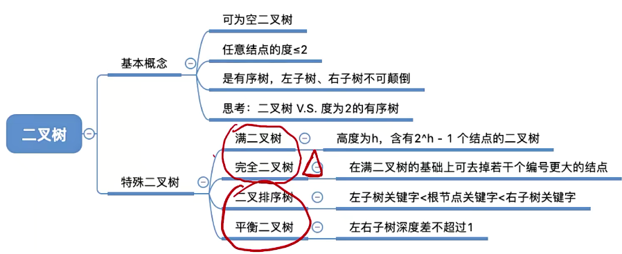
二叉树是n（n>=0）个结点的有限集合：
- 空二叉树，即n=0
- 由一个根节点和两个互不相交的称为根的左子树和右子树组成。左右子树分别各是一棵二叉树
特点：
- 每个结点至多只有两课子树
- 左右子树不能颠倒（二叉树是有序树）
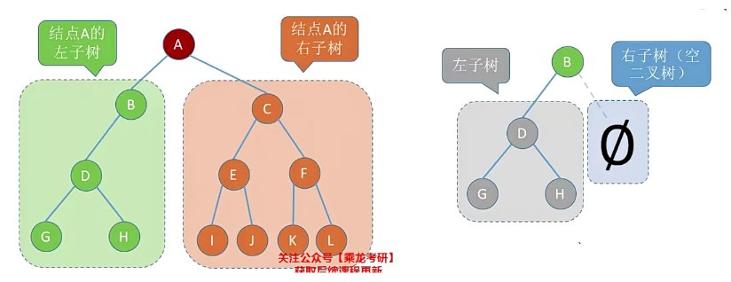
特殊二叉树：
满二叉树与完全二叉树
- 满二叉树：高度为h，含有$2^h-1$个结点的二叉树
- 只有最后一层有叶子结点
- 不存在度为1的结点
- 按层序从1开始编号，结点i的左孩子为2i，右孩子为2i+1，父节点为[i/2]（如果有）
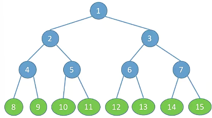
- 完全二叉树：当且仅当其每个结点都与高度为h的满二叉树中编号为1-n的结点一一对应时称为完全二叉树
- 只有最后两层可能有叶子结点
- 最多只有一个度为1的结点
- 同上③
- i<=[n/2]为分支结点，i>[n/2]为叶子结点
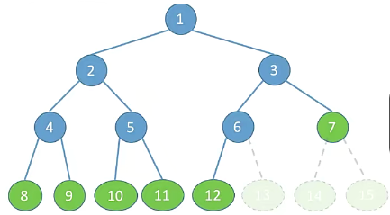
二叉排序树
一棵二叉树或是空二叉树，有以下性质：
- 左子树上所有结点的关键字小于根节点的关键字
- 右子树上所有结点的关键字大于根节点的关键字
- 左子树和右子树又各是一棵二叉排序树
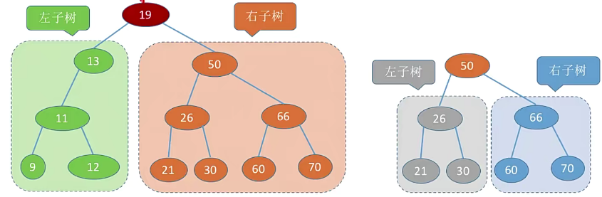
平衡二叉树
树上任意结点的左子树和右子树深度只差不超过1。
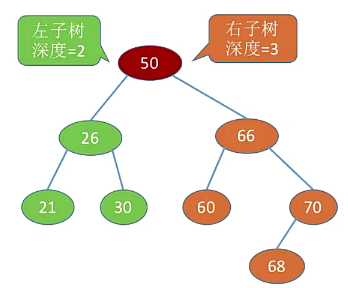
平衡二叉树尽量增加宽度而非深度，以避免频繁的对比，提高搜索效率。
二叉树的性质
二叉树
- 设非空二叉树中度为0、1和2的结点个数分别为$n_0$，$n_1$，$n_2$，则$n_0=n-2+1$（叶子结点比二分支结点多一个）
假设树种结点总数为n，则：- $n=n_0+n_1+n_2$
- $n=n_1+2n_2+1$
两式相减可证
完全二叉树
- 具有n个结点的完全二叉树的高度h为[$log_2(n+1)$]（向上取整）或$[log_2n]+1$（向下取整）
- 第一个：由高为h的满二叉树和h-1的满二叉树夹逼所得
- 第二个：由高为h-1的满二叉树和高位h的完全二叉树夹逼所得
- 对于完全二叉树，可以有结点数n推出度为0，1，2的结点个数
- 完全二叉树最多只有一个度为1的结点，即$n_1=0或1$
- $n_0=n_2+1$→$n_0+n_2$一定是奇数
二叉树的存储结构
顺序存储
---------------------本文结束---------------------